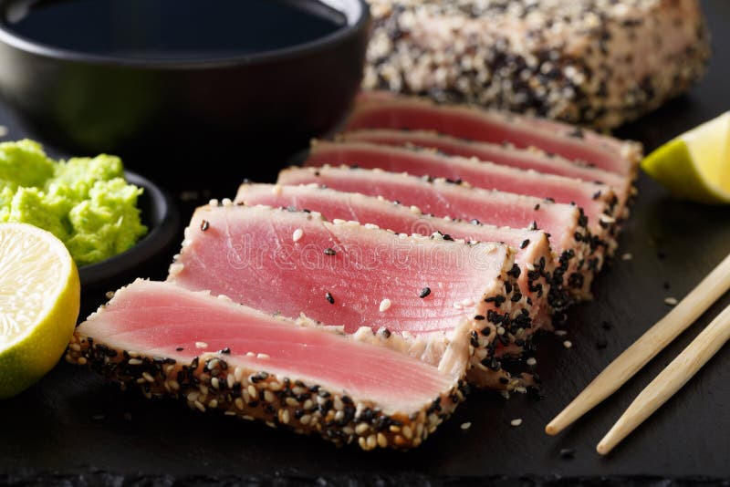

Seared Ahi Tuna

Description
Let's get one thing straight, this ain't canned tuna! You have
to buy this at your grocery store, along with a few other
ingredients. It's simple to make, and your friends will think
you're a badass cook, and they'll make you cook at every
gathering. And that's okay, granted that they do the dishes!
Ingredients
T
- Two 5 oz Ahi Tuna Steaks
- 1 teaspoon kosher salt
- 1/4 teaspoon cayenne pepper
- 1/2 tablespoon butter
- 2 tablespoons olive oil
- 1 tablespoon whole peppercorns
Directions
Pat the tuna steaks dry and season both sides with salt
and cayenne pepper.
- Melt butter in a skillet over medium-high heat
- Add olive oil & peppercorns. Cook until the peppercorns
soften & pop, which is around 5 minutes.
- Gently place seasoned tuna in the skillet and cook until
you're satisfied with it's doneness. This is all on personal
preference, but the more medium-rare the steak, the better!
- Slice the tuna however many pieces you like, but I'm not
going to share!